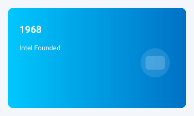
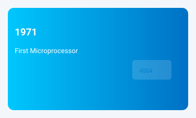
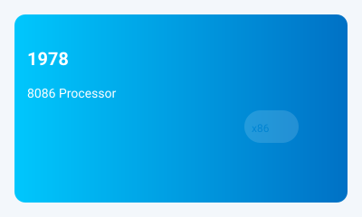
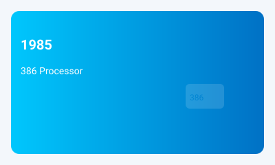
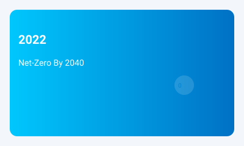
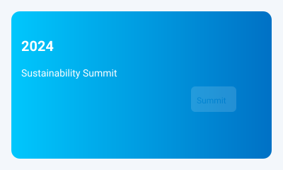

1968
Intel Founded
Robert Noyce and Gordon Moore rename NM Electronics to Intel Corporation.
Founding set the stage for decades of semiconductor innovation and leadership.
Explore Intel's journey through time, discovering how our commitment to innovation has shaped a more sustainable future for technology and our planet.

Robert Noyce and Gordon Moore rename NM Electronics to Intel Corporation.
Founding set the stage for decades of semiconductor innovation and leadership.

Intel debuts the 4004, the world's first commercial microprocessor.
The 4004 launched the microprocessor era and enabled compact computing devices.

Launch of the 8086 processor, establishing the x86 architecture.
x86 became foundational for personal computers and servers worldwide.

Intel introduces the 386 processor with 32-bit architecture.
The 386 enabled advanced multitasking and more powerful PC applications.
Intel records its highest annual greenhouse gas emissions for operations.
Subsequent investments in energy efficiency and renewables drove long-term reductions.
Intel launches its RISE strategy and 2030 sustainability goals.
RISE focuses on responsible supply chains, inclusion, sustainability, and enabling partners.

Intel commits to net-zero Scope 1 and 2 greenhouse gas emissions by 2040.
This builds on years of emissions reductions and renewable energy adoption.
Intel achieves 99% renewable electricity usage worldwide.
Near-universal renewable sourcing significantly reduced operational carbon intensity.

Intel hosts its first Sustainability Summit, uniting industry stakeholders.
The summit focused on supplier collaboration, policy, and next-gen sustainable manufacturing.
Scroll to view timeline | Hover over cards to learn more!